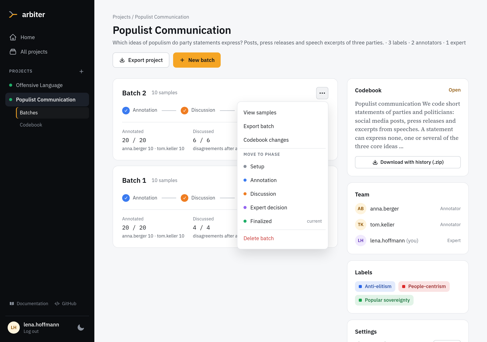

Export
Experts can download a project’s data at any time, also while batches are still running. An export holds everything Arbiter has recorded for each text: every label at every stage, who gave it and when, and the discussion.
Download
Export project, at the top of the project page, downloads all batches in one file.
Export batch, in the menu ⋯ of a batch card or on its list of samples, downloads one batch.


Export project for everything, Export batch for one batch.
The codebook with its history is a separate download, see Write the codebook. Keep both together: the codebook documents the rules every label was given under.
What is in the file
The export is a JSON Lines file: one line per text, each a JSON object. Texts nobody has labeled yet are included, with empty lists.
Field |
What it holds |
|---|---|
|
Arbiter’s id of the text |
|
the text |
|
the other columns of the uploaded file, e.g. |
|
each annotator’s labels from the annotation |
|
each annotator’s labels after the discussion; empty if the text was not discussed |
|
the chat about this text |
|
the experts’ decisions; empty if the text needed none |
|
the batch |
|
who annotated and decided in the batch |
The label fields are lists with one entry per person, {"user": …, "labels": …, "at": …}, where at is when the labels were saved; a chat message has user, at and content. Only saved labels are included: an annotator who has not saved a text yet does not appear in its list.
labels holds the names of the chosen labels:
{ "user": "lena.hoffmann", "labels": ["Popular sovereignty"], "at": "2026-11-26T15:02:30.328+00:00" }
In projects with spans in the text, it holds the marked passages instead, with their position in the text (start and end count characters, from 0):
{
"user": "tom.keller",
"labels": [{ "label": "Insult", "start": 16, "end": 21, "text": "idiot" }],
"at": "2026-11-26T15:02:31.376+00:00"
}
The final label
The export keeps every stage, so it has no single field for the result. For a finished batch, a text’s final label is the expert’s decision if there is one, otherwise what the annotators agreed on after the discussion, otherwise what they agreed on in the annotation. With pandas:
import pandas as pd
df = pd.read_json("project_populist-communication.jsonl", lines=True)
def final_label(row):
"""The labels a text ended with: the expert's decision, otherwise what the annotators
agreed on in the discussion, otherwise in the annotation."""
for phase in ("labels_expert", "labels_discussion", "labels_annotation"):
values = [entry["labels"] for entry in row[phase]]
if values:
return values[0] if all(v == values[0] for v in values) else None
return None
df["label"] = df.apply(final_label, axis=1)
df["doc_id"] = df["metadata"].str["doc_id"] # your id column, to join the labels to your data
Use it on finished batches: in a running batch, one annotator’s labels can be there while the others’ are still missing. None means that the experts of the batch decided the text differently.
The labels from the annotation are the independent judgments. Use them to compute the agreement between annotators before any discussion.